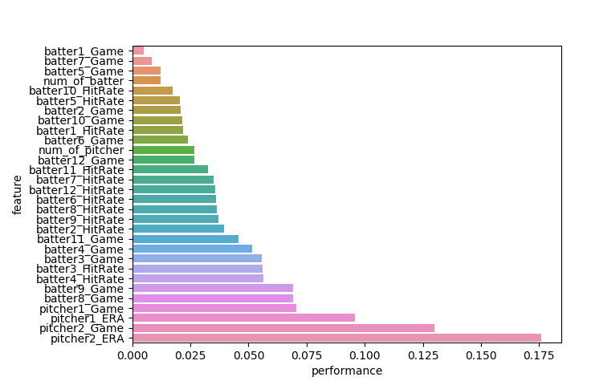
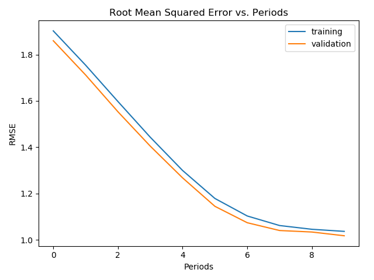
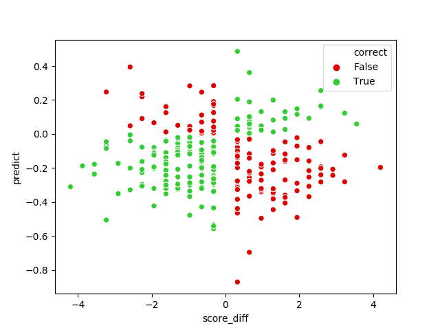

Getting started and Data Scraping
This is my first AI project after i have finished the google machine learning crash course. I would like start with some basic and I like baseball, so, here i go.
After this project, i noticed that the most time consuming part are data collection and organization. I choose SeanLahman.com and baseballAI.com ( because it have 2018 mlb schedule and i want to try web scraping~ ). Here is the part of code for selenium.webdriver.
chrome_options = Options()
chrome_options.add_argument("--disable-extensions")
chrome_options.add_argument("--headless")
try:
# a driver is needed because we need to wait for the web to data from database
driver = webdriver.Chrome(executable_path="C:/chromedriver.exe", chrome_options = chrome_options)
except:
print("chrome error")
return 0
driver.get(link)
html_source = driver.page_source
doc = html.fromstring(html_source)
scorebox_div = doc.xpath("//div[@class='scorebox']/div")
Data Processing and Anaylst
After the data is loaded as a panada dataframe with columns of team name, players and score, I combine them with batter and pitcher data from SeanLahman. As some of the player (~0.18%) is new player and dont have any data in previous year, I filled those blank with average.
And then, I try to get the Pearson correlation coefficient of data.
It shows that pitcher and batter 3 and 4 is most important, which is make sense. However, the coefficient are very small and it may because the randomness of baseball is very large.
Model training
I select first 10 features and Input them to my tensorflow program with different Optimizer and Regressor Here is part of the code:
def train_model(
learning_rate,
steps,
batch_size,
hidden_units,
feature_columns,
training_examples,
training_targets,
validation_examples,
validation_targets):
periods = 10
steps_per_period = steps / periods
# Create a linear regressor object.
my_optimizer = tf.train.GradientDescentOptimizer(learning_rate=learning_rate)
my_optimizer = tf.contrib.estimator.clip_gradients_by_norm(my_optimizer, 5.0)
dnn_regressor = tf.estimator.DNNRegressor(
feature_columns=feature_columns,
hidden_units=hidden_units,
optimizer=my_optimizer
)
training_input_fn = lambda: my_input_fn(training_examples,
training_targets["score_diff"],
batch_size=batch_size)
predict_training_input_fn = lambda: my_input_fn(training_examples,
training_targets["score_diff"],
batch_size=batch_size,
num_epochs=1,
shuffle=True)
predict_validation_input_fn = lambda: my_input_fn(validation_examples,
validation_targets["score_diff"],
batch_size=batch_size,
num_epochs=1,
shuffle=True)
# Train the model, but do so inside a loop so that we can periodically assess
# loss metrics.
print("Training model...")
print("RMSE (on training data):")
training_rmse = []
validation_rmse = []
for period in range (0, periods):
# Train the model, starting from the prior state.
dnn_regressor.train(
input_fn=training_input_fn,
steps=steps_per_period
)
# Take a break and compute predictions.
training_predictions = dnn_regressor.predict(input_fn=predict_training_input_fn)
training_predictions = np.array([item['predictions'][0] for item in training_predictions])
validation_predictions = dnn_regressor.predict(input_fn=predict_validation_input_fn)
validation_predictions = np.array([item['predictions'][0] for item in validation_predictions])
# Compute training and validation loss.
training_root_mean_squared_error = math.sqrt(
metrics.mean_squared_error(training_predictions, training_targets))
validation_root_mean_squared_error = math.sqrt(
metrics.mean_squared_error(validation_predictions, validation_targets))
# Occasionally print the current loss.
print(" period %02d : %0.6f" % (period, training_root_mean_squared_error))
# Add the loss metrics from this period to our list.
training_rmse.append(training_root_mean_squared_error)
validation_rmse.append(validation_root_mean_squared_error)
print("Model training finished.")
Training result
The graph above is the RMSE result from AdagradOptimizer and DNN regressor modelThe rmse of standardized score difference is approching 1 which means the error of the model is one standard deviation. We can see the distrubtion from the following graph with 300 sample:
We cannot see any pattern from the above chart and the distrubtion of correct predict and false predict are quite even. And the following is the correct prediction rate from different models:
| Optimizer\ Regressor | Linear | DNN |
|---|---|---|
| GD | 53.22% | 52.66% |
| FTRL | 53.22% | 52.10% |
| Adam | 57.63% | 60.28% |
| Ada | 53.17% | 52.00% |
| Adag | 57.16% | 54.55% |
Further investigation
We can see that the difference of model is very small. And i tried to increase the accuracy by adding categorical column with team identity. And construct it in embedded columns
team_1 = tf.feature_column.categorical_column_with_identity(key='team', num_buckets=5, default_value=0)
team_1_embedding_column = tf.feature_column.embedding_column(team_1, dimension=10)
feature_columns.add(team_1_embedding_column)
However, there is no observable improvement. To conclude, Machine learning algorithm perform better than random guess but the accuracy cannot be improved easily as the correlation of data is very small. Here is my github link for more details.
© 2018 Gary Ho. All rights reserved.